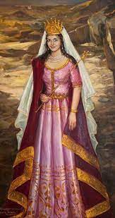

Սաթենիկ, ալանների արքայի դուստրը, որ ամուսնացել է Մեծ Հայքի Արքա՝ Արտաշես Ա-ի հետ։ Նրանց սիրային պատմությունը, ճանաչված իբրև «Արտաշես և Սաթենիկ» առասպել, ներկայացվել է 5-րդ դարի հայ պատմաբան Մովսես Խորենացու կողմից «Հայոց պատմություն» գրքում։ Խորենացին նշել է, թե պատմությունը լավ գիտեցված էր իր ապրած ժամանակ Հայքի ժողովուրդին, մինջև իսկ պատմված էր ճամփորդող մարդկանցից[1]։ Այժմ Սաթենիկը ժողովրդական իգական անուն է Հայաստանում։
Պատմություն
Արտաշես Ա, գահին բարձրացավ մ.թ.ա. 189-ին և ճանաչվեց իբրև Մեծ Հայքի արքա թե՛ Հռոմեական հանրապետության և թե՛ Պարթևստանի կողմից։ Պատմվածքը տեղի է ունեցել ալանների ներխուժումանը Մեծ Հայք Արտաշես Ա-ի թագավորության ժամանակ։ Վիրքի գրավումից հետո, Ալանները ավելի հարավ ներխուժելով անցան Կուր գետը, մտնելով Մեծ Հայք։ Արտաշեսը հավաքել է մեծ զորք դիմադրելու համար Ալաններին։ Պատերազմ ծագել ալանների և հայերի միջև, որի արդյունքում գերավարվել է ալանների թագավորի կրտսեր զավակը։ Ալանները ստիպված ետ են քաշվել մինչև Կուր գետի հյուսիսային ափը իսկ հայերը հետևել են ալաններին մինչև Կուր գետի հարավային ափը։ Ալանների թագավորը խնդրել է ստորագրման խաղաղության դաշինքի իր ժողովուրդի և հայերի միջև և խոստացել է Արտաշեսի տալ ինչ որ ցանկանա, բայց այս վերջինը մերժել է խնդրանքը։Երբ Արտաշեսը չի համաձայնում պատանուն ետ տալ, պատանու քույրը բարձրանում է գետի ափի բարձրավանդակը և թարգմանողի օգնությամբ ձայն է տալիս Արտաշեսին[1]։ Արտաշեսն այս իմաստուն խոսքերը լսելով գնաց գետի ափը և տեսնելով գեղեցիկ կույսին ու լսելով նրանից իմաստուն խոսքեր, նրան ցանկացավ։ Կանչում է իր դայակ Սմբատին, բաց է անում իր սրտի փափագը՝ կին առնել Ալանների արքայազն օրիորդին, դաշինք և ուխտ կնքել քաջերի ազգի հետ և պատանուն խաղաղությամբ արձակել։ Սմբատը հավանություն է տալիս և մարդ ուղարկում Ալանների Թագավորի մոտ, որ ալանների արքայադուստր Սաթենիկին կնության տա Արտաշեսին։ Ալանների թագավորն ասում է․ «Եվ ո՞րտեղից քաջ Արտաշեսը պետքա տա հազար հազարներ ու բյուր բյուրեր քաջերի սերունդ այս կույսի՝ ալանների արքայազն օրիորդի համար»[1]։ Վիպասաններն երգելիս այս տեղն առասպելաբանում են ասելով․

Վիպասաններն երգելիս այս տեղն առասպելաբանում են ասելով․ «Հեծավ արի Արտաշես արքան գեղեցեկ սև ձին, Եվ հանելով ոսկեօղ շիկափոկ պարանը, Եվ անցնելով գետն իբրև սրաթև արծիվ, Եվ նետելով ոսկեօղ շիկափոկ պարանը, Ձգեց մեջքը ալանաց օրիորդի, Եվ շատ ցավեցրեց փափուկ օրիորդի մեջքը, Արագաբար իր ճամբարն հասցնելով»[1]։